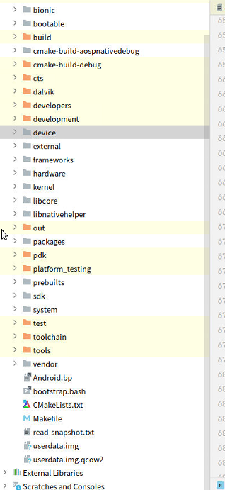

[TOC]
1. clion
1.1. clion第一次打开工程, 生成cmakeList.txt
对于没有cmakeList.txt的工程，选择自动生成cmakeList.txt
特别注意：有些clion版本，没有New CMake Project from Sources
https://qa.1r1g.com/sf/ask/4758331231/ 从现有源创建项目时如何在 Clion 中生成 CMakeLists.txt？
--------> 验证ok
1.2. clion目录结构
.idea index在这里
cmake-build-aospnativedebug cmake编译的一些信息
1.3. clion win与linux代码同步
https://cloud.tencent.com/developer/article/1406250 使用Clion优雅的完全远程自动同步和远程调试c++
1.4. clion cpp跳转问题：
cljon实现跳转几点结论：
1、clion通过.h链接，实现跳转
--->结论：保证能跳进所有的.h(看头文件，没有标红), 那么所有工程都OK
2、clion通过cmakelist编译链接，实现跳转的
对于gn编译的项目，clion自动生成cmakelist, 实现跳转－－> 可能会存在问题
根本原因：两套direction base导致的
第一套：gn编译，.c里的#include "src/sksl/ir/SkSLProgram.h" 以src上一层作为base
第二套：cmakeList。如果自动生成的CMakeLists.txt没有以上—层为base, 则无法找到SkSLProgram.h, 从而无法跳转
解决方法：cmakeList.txt中 添加include_directories(上一层路径）
以Skia源码为例：
---->说明include/core/SkBitmap.h的direction base没有include_directories进来
上一层即根目录
1.5. AOSP Native代码导入CLion，跳转问题
见： HowToReadCode 中《framework Native Clion 跳转环境（linux下）》
1.6. clion加速
1.6.1. exclude没用的文件目录

1.6.2. clion关闭自动索引index
1.6.3. 终极手段：保存.cache?
du -sh *
index最终存储在.cache中，可以看见，索引很大 ----> 如何不让它更新呢？
https://plugins.jetbrains.com/plugin/12334-gradianto/versions
https://plugins.jetbrains.com/plugin/11938-one-dark-theme
https://www.thinbug.com/q/36628483
验证：
重启ide：
1、index缓冲区大小是否变
2、会不会重新index
---》备份缓冲区
1.7. 权限问题：
Error running 'cpp_leetcode': Cannot run program "G:\working_pan\PROJECTS\cpp_leetcode\cmake-build-debug\cpp_leetcode.exe" (in directory "G:\working_pan\PROJECTS\cpp_leetcode\cmake-build-debug"): CreateProcess error=5, 拒绝访问。
1、明明文件在 2、clion以管理员启动的 ------》关闭360！
1.8. 激活码
Server address http://81.68.147.56:8163